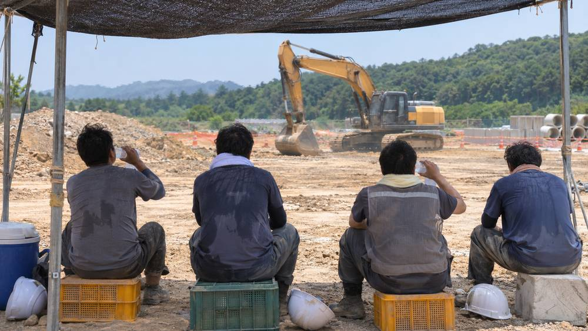

제주 폭염 기후보험, 지급 저조에 12월 5일까지 설문

공공 건설현장 일용노동자가 폭염으로 일을 멈추면 시간당 1만7,210원을 주는 보험이다. 제주도는 설문 결과를 2027년 지급조건 개선에 반영한다.
제주특별자치도가 폭염으로 일을 멈춘 건설 일용노동자의 소득을 메워 주는 '기후보험'의 지급조건을 고치려고 12월 5일까지 설문조사를 한다. 도가 11월 19일 내놓은 설명에 따르면 공기를 맞춰야 하는 현장이 일을 쉬게 하기 어려워 보험금이 나간 실적이 적었다.
이 보험은 7월 28일 전국 첫 시범 사업으로 문을 열었고, 퇴직공제에 든 일용노동자가 일하는 1억 원 이상 공공 발주 공사가 대상이다. 지금은 폭염경보가 내려지고, 오전 4시간을 일한 뒤 오후 1시 이후 작업을 멈추는 요건을 모두 채워야 보험금이 나온다. 기상청 특보와 작업 중지 여부만 맞으면 피해를 따로 증명하지 않아도 되는 '지수형 보험'(미리 정한 지표를 넘으면 지급하는 방식)이다. 보험금은 보통인부 하루 노임 17만2,068원의 80%를 시급으로 바꾼 1만7,210원씩, 최대 4시간 분량이다.
재원은 도가 3월 금융위원회 '상생보험 공모'에서 받은 보험협회 상생기금 9억 원에 도비 1억 원을 더한 3년간 10억 원이다. 제주에 폭염특보가 내려진 날은 2023년 38일, 2025년 80일로 두 해 만에 배 넘게 늘었고 지난해 온열질환자는 107명이었다.
조사는 16일 시작했고 제주특별자치도 경제통상진흥원이 맡는다. 도민 인식조사는 누구나 참여해 기후보험 인지도와 지원 대상 확대 등에 답한다. 현장 조사는 도가 발주한 공사의 소장과 안전관리자, 노동자에게 폭염 때 실제로 일을 멈췄는지, 지급 요건이 알맞은지 묻는다. 조선희 도 기후에너지국장은 기후보험이 폭염 속 노동자의 안전과 생계를 지키는 제도로 자리 잡으려면 "현장의 목소리가 중요하다"고 말했다. 2027년 보험의 지급 요건과 보장 범위는 이번 조사 결과를 두고 보험업계 등과 협의해 고친다. 「기후위기 적응 및 회복력 강화에 관한 법률」은 2027년 9월 23일 시행된다.
시민에너지 관점
폭염특보 일수가 2년 만에 두 배가 넘은 제주에서, 일을 멈춘 노동자의 소득을 공공이 받쳐 주는 제도가 처음 생겼다. 그러나 공기에 쫓기는 현장이 작업을 멈추지 못해 보험금이 거의 나가지 않는다면 이름뿐인 안전망이 된다. 기후 적응 비용을 노동자 개인에게 떠넘기지 않으려면 지급조건을 현장에 맞추고, 지역에서 만든 재생에너지 이익처럼 주민이 함께 쌓는 재원으로 기후 안전망을 넓혀야 한다. 12월 5일까지 열린 설문에 현장 노동자와 도민이 많이 참여하길 바란다.
출처: 제주특별자치도 2026-11-19 보도자료 「제주, 건설현장 기후보험 개선에 도민 목소리 담는다」(탄소중립정책과) 원문 보기
출처: 제주특별자치도 2026-07-09 보도자료 「'건설 일용직 노동자 기후보험' 7월 하순부터 본격 시행」 원문 보기
출처: 제주특별자치도 2026-11-13 보도자료 「제주형 기후보험, COP31 국제무대서 소개」 원문 보기